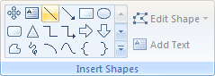
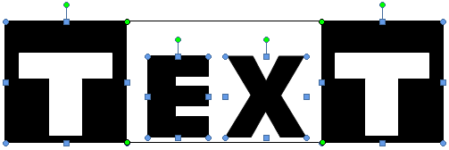
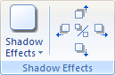
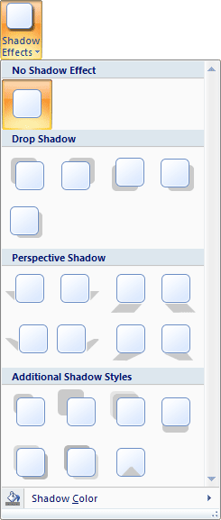
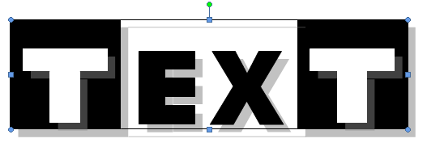
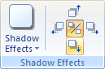

Free
computer Tutorials
|
Free
computer Tutorials
|
|
 home home |
|
|||||
Microsoft Word 2007 to 2010Completing the LogoFor the other letter T, we can copy and paste the first one. So click on your letter T to select it. Now hold down the CTRL key on your keyboard. Keep it held down and press the letter C to copy followed by the letter V to paste. You should then see two letter Ts: Hold your mouse down on the second letter T. Keep it held down and drag it into position: We can now add the lines to the top and bottom. Select any of your letters to bring up the Format tab again, if it's not already there. Now select the diagonal line from the Insert Shapes panel:  Move your cursor across to your page. Hold down the CTRL key on your keyboard. Keep it held down and draw out a line across the top of your letters. (Holding down the CTRL key ensures you get a straight line.) If your line is too long or too short, keep the CTRL key held down. Hold down your left mouse button on one of the green circles on the end of your line. Then drag to get the correct size. With your new line selected, copy and paste it. Move the second line down to the bottom. (You can use CTRL and the arrow keys to move the line into position.) When you're done, you'll have something like this: Now select all of your shapes by holding down the CTRL key and left clicking each one: (The lines are quite tricky to select so you may need to zoom in.)  With your shapes all selected, group them together to make one shape. Move the new shape around the page to make sure everything is there. Your final logo should look like this:
Add a Shadow EffectYou can spice up the shapes you create by adding a shadow to it. Select your Text logo then click on the Format tab. From the Format tab, locate the Shadow Effects panel:  Click on the Shadow Effects item to see the following menu:  Move your mouse over each one, but don't left click. Look at your logo and you'll see a preview of what the effect looks like. Select one that you like. In the image below, we've gone for Style 4, under Drop Shadow:  You can use the arrows next to Shadow Effects to increase or decrease the shadow area:  Play around with the Shadow Effects, and the other items on the Format menu.
Create a Letterhead in Microsoft Word 2007/2010 --> <--Back to the Word Contents Page View all our Home Study Computer Courses
|
||||||
|